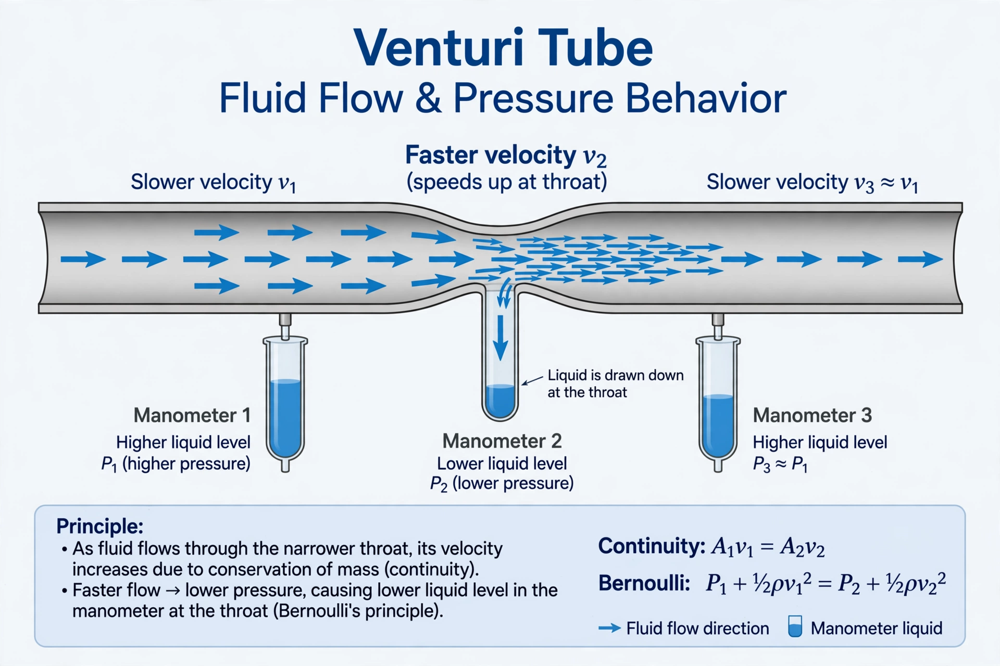

| Venturi effect | |
|---|---|
 Flow through a Venturi tube: pressure falls where the tube narrows | |
| Named after | Giovanni Battista Venturi |
| Field | Fluid dynamics |
The Venturi effect is the reduction in fluid pressure that results when a fluid flows through a constricted section (a "throat") of a pipe. It is named after the Italian physicist Giovanni Battista Venturi (1746–1822), who described the phenomenon in 1797. The effect is a direct consequence of the conservation of mass and Bernoulli's principle: where the pipe narrows, the fluid must speed up to maintain the same flow rate, and the increase in velocity is accompanied by a drop in pressure.
For incompressible flow, the continuity equation requires the product of cross-sectional area and velocity to remain constant along the pipe:
A1v1 = A2v2
Bernoulli's equation then relates the pressure difference between the wide section and the throat to the change in velocity:
p1 − p2 = ½ρ(v22 − v12)
Because the throat has a smaller area, v2 exceeds v1, so p2 is lower than p1.
The Venturi effect underlies many devices: Venturi meters measure flow rates in pipelines from the pressure drop; carburettors use the low pressure at a throat to draw fuel into an engine's airstream; aspirators and eductors create suction for laboratory and industrial pumping; and medical oxygen masks use the entrainment of air at a constriction to deliver controlled oxygen concentrations. Flow through narrow gaps between tall buildings, and the cooling breeze through the screened windows of buildings such as the Hawa Mahal in Jaipur, are also commonly explained by reference to the effect.
If the pressure at the throat falls to the vapour pressure of the liquid, cavitation occurs and the flow may choke. In compressible (gas) flow the same principle applies with corrections for density changes, and a converging–diverging nozzle can accelerate gas to supersonic speeds.